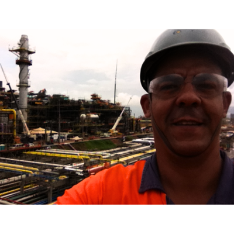
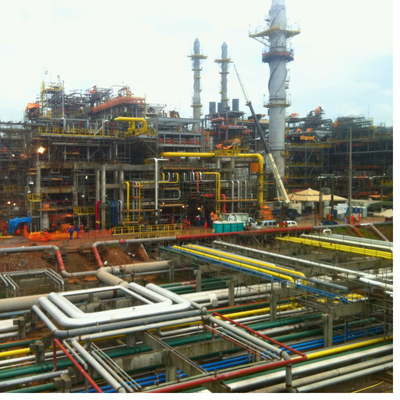

Visão Geral do Projeto
Refinária do Nordeste
Atuação no planejamento multidisciplinar em montagem e comissionamento de grandes plantas industriais, integrando campo–engenharia, controlando cronogramas, riscos e entregas para partida segura de sistemas.
Participação de Alex Cerqueira
Atuei na RNEST (Refinaria Abreu e Lima) em planejamento de obras e comissionamento, estruturando EAP, cronogramas look-ahead e de detalhe, curvas S, histograma de recursos e gestão de restrições. Conduzi integração entre equipes (civil, mecânica, elétrica, instrumentação), alinhamentos semanais e controle de riscos/caminho crítico, apoiando a liberação de sistemas e a prontidão operacional no Complexo de Suape (PE).
- Criação e controle de cronogramas físicos e financeiros. Análises de desvios e planos de ação
- Diligenciamento de suprimentos críticos e equipamentos de grande Porte.
- Planejamento de montagem de grandes equipamentos como silos, reatores e chillers.
- Elaboração de relatórios gerenciais, Curvas S de avanços Fisicos, emissão de programações e Relatorios Diários de Obra.
- Comissionamento de ativos e operação assistida, tratamento de pendências e entrega final
Soluções Aplicadas
- Estrutura Analítica do Projeto (EAP) e cronogramas de detalhe (P6/MS Project), curvas S e histogramas de recursos.
- Uso de cronogramas multi-nível para controle detalhado de frentes de serviço e consequente programação consensuada de forte aderência
- Planejamento de comissionamento (listas de sistemas/subsistemas e pré-requisitos.
- .
Destaques Técnicos do Projeto
| Comissionamento de SOPs | Testes Hidrostáticos de alta pressão / Peso | Limpezas de Grandes trechos de tubulações |
|---|---|---|
| Reatores PET | 220t cada | Erguidos com guindastes MONITOWOC 18000 |
| Silos POY/PET | 30m altura / 60t | Movimentação com LTM 11200 (1200t) |
| Chillers TRANE | 42t | Instalados com pórtico Saraiva 200t |
| Bombas, Compressores, Vasos | Centenas | Montagem simultânea em linhas A/B/C |
Galeria do Projeto
|  |  |
| Montagem de reator da Linha B da planta de Pet | Silos de Pet - 30 m de altura e 160 ton |
Galeria do Projeto
| Montagem de reator da Linha B da planta de Pet | Silos de Pet - 30 m de altura e 160 ton |
Vídeo do Projeto
Contato
© PLANENG – Engenharia de Planejamento. Todos os direitos reservados.